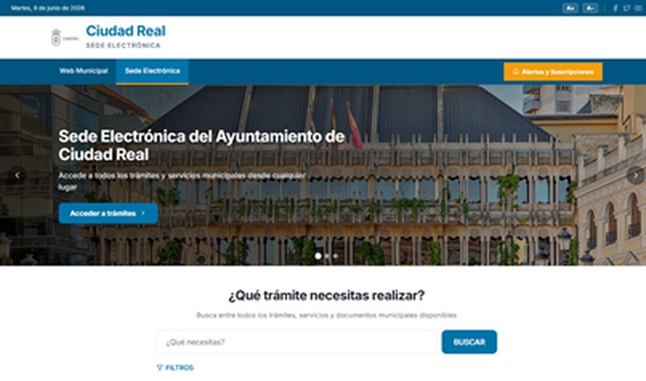
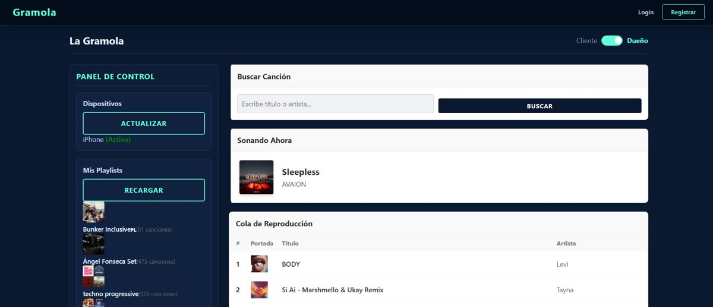
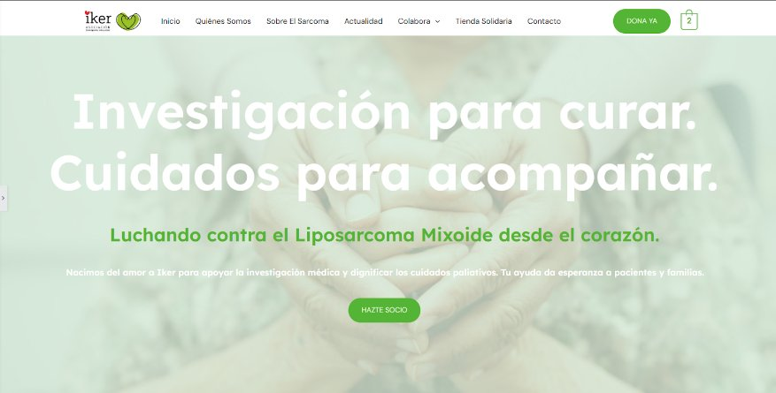
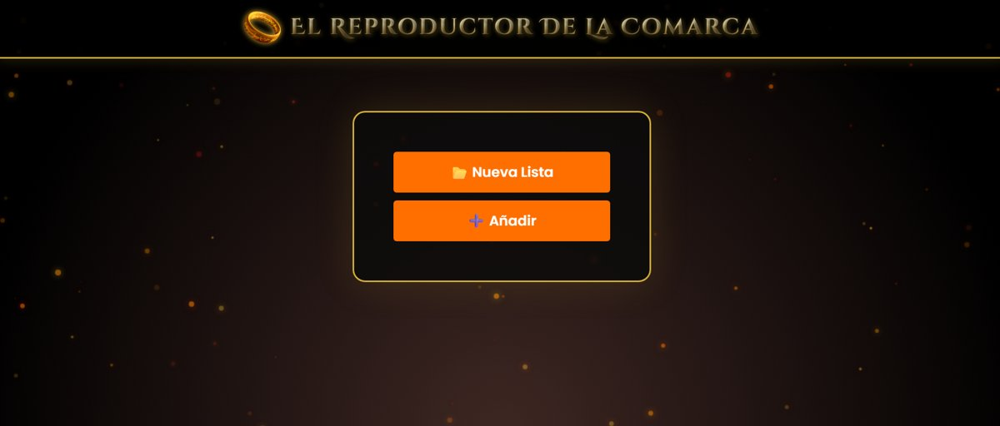

Proyectos Destacados

Sede Electrónica · Ayuntamiento de Ciudad Real
Terminada · Pendiente de publicaciónNueva sede electrónica del Ayuntamiento, desarrollada de principio a fin durante mis prácticas externas y presentada como TFG (9,5/10). Sustituirá a la sede actual, con diseño desactualizado y contenidos gestionados a mano. El proyecto está terminado y entregado; saldrá en producción cuando el Ayuntamiento complete la renovación de sus áreas digitales.
- Arquitectura desacoplada: API REST con Spring Boot (Java 21), SPA en React y MySQL.
- Sincronización automática con el gestor de expedientes DipucrTramita mediante modelo Push.
- Buscador global con filtros por área, alertas y suscripciones por correo, y agregador de noticias.
- Módulos de Procesos Selectivos, Plenos, Convenios y Subvenciones, con integración con SIGEM, Power BI y Matomo.
- Cumple WCAG 2.1 AA, ENS y ENI. Preparada para desplegarse en Ubuntu con nginx y HTTPS.

La Gramola
Proyecto universitarioPlataforma web para gestión musical en establecimientos comerciales. Permite a los usuarios interactuar con la música del local mediante pagos seguros. Incluye entorno de pruebas automatizado con Selenium.

Web Asociación Iker
En prensaNueva web oficial de la Asociación Iker, entidad sin ánimo de lucro que impulsa la investigación del liposarcoma mixoide y los cuidados paliativos. La desarrollamos de forma altruista un equipo de cinco estudiantes de la ESI, en la asignatura de Comercio Electrónico de la UCLM.
- Nuestra propuesta fue la elegida entre una decena de proyectos presentados en la asignatura.
- Donaciones, alta de socios, tienda solidaria con carrito y voluntariado.
- Transparencia: fondos destinados a investigación, balance económico y estatutos.
- Presentada oficialmente en la ESI en octubre de 2026 y recogida por varios medios.

Reproductor Multimedia Web
Proyecto universitarioAplicación web interactiva (SPA) para la gestión y reproducción de contenido multimedia. Interfaz moderna y responsive.

Portfolio Web Personal
Diseño y desarrollo de identidad digital profesional. Implementación de buenas prácticas de SEO, accesibilidad y despliegue automatizado.